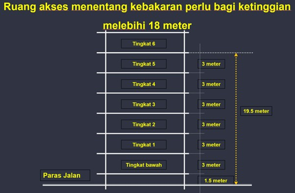
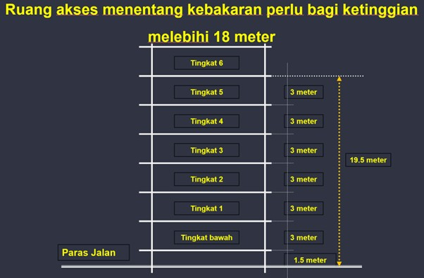
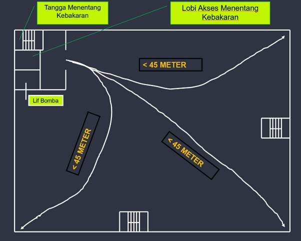

Ruang Akses Menentang Kebakaran
Keperluan mengadakan Ruang Akses Menentang Kebakaran dalam Undang-Undang Kecil Bangunan Seragam (UBBL) 1984, termasuk pindaan 2021, adalah satu elemen penting dalam strategi keselamatan kebakaran aktif untuk memudahkan operasi memadam kebakaran oleh pihak Jabatan Bomba dan Penyelamat Malaysia (JBPM) dan memberi perlindungan sementara kepada penghuni.
Ruang Akses Menentang Kebakaran (dikenali juga sebagai Fire Fighting Access Lobby) bertujuan untuk:
- Menjadi ruang akses dan menentang kebakaran bagi anggota bomba di bangunan tinggi.
- Berfungsi sebagai 'Staging Area' semasa operasi kebakaran, di mana anggota bomba boleh berkumpul dan menyediakan peralatan.
- Menempatkan peralatan pencegah kebakaran yang kritikal.
- Menghalang kemasukan/kemerabakan api, asap, haba dan gas toksik ke dalam tangga menentang kebakaran, menjadikannya kawasan yang lebih selamat.
- Bertindak sebagai 'Kawasan selamat sementara' (Area of Refuge) bagi penghuni untuk menyelamatkan diri semasa kebakaran.
Merujuk UUK 133, “ruang akses menentang kebakaran” ertinya sesuatu ruang yang terpisah daripada tingkat yang menggunakannya oleh binaan yang mempunyai TKA sekurang-kurangnya setengah jam, yang boleh dilalui terus daripada sesuatu tangga menentang kebakaran dan lif bomba dan mengandungi pancur kering atau pancur basah.
UUK 197B pula menerangkan bahawa Ruang Akses Menentang Kebakaran (Fire Fighting Access Lobby) adalah klausa yang menetapkan spesifikasi minimum untuk reka bentuk lobi yang menjadi sebahagian daripada Lubong Menentang Kebakaran (Fire Fighting Shaft) seperti yang diwajibkan dalam UUK 197A.
Keperluan Ruang Akses Menentang Kebakaran diwujudkan melalui pembinaan dan pemasangan ciri-ciri keselamatan tertentu, seperti yang diperuntukkan dalam Bahagian VII dan VIII UBBL, khususnya di bawah Undang-Undang Kecil yang berkaitan (cth: UUK 133):
- Pemisahan Kebakaran (Fire Separation) - Ruang Akses Menentang Kebakaran perlu dipisahkan daripada tingkat yang menggunakannya oleh binaan yang mempunyai Tempoh Ketahanan Api (TKA) sekurang-kurangnya setengah jam atau tempoh yang ditetapkan. Tujuannya adalah untuk mengelakkan api dan asap dari tingkat bangunan memasuki lobi.
- Akses Terus - Ruang Akses Menentang Kebakaran mesti boleh dilalui terus daripada sesuatu tangga menentang kebakaran dan lif bomba.
- Peralatan Kebakaran - Ruang Akses Menentang Kebakaran mesti mengandungi sambungan Pancur Kering atau Pancur Basah (Dry Riser/Wet Riser Inlet) untuk kegunaan anggota bomba.
- Jarak Perjalanan - Ruang akses menentang kebakaran hendaklah disediakan di tiap-tiap paras tingkat dan jarak perjalanan daripada tempat paling jauh sekali bagi tingkat itu tidak boleh melebihi 45 meter.
Tujuan klausa ini adalah untuk memastikan Ruang Akses Bomba mempunyai saiz dan pengudaraan yang mencukupi untuk membolehkan anggota Bomba beroperasi dengan selamat, menyambung hos, dan mengelakkan asap daripada merebak ke tangga Bomba dan Lif Bomba.
| Sub-Klausa | Teks Klausa | Maksud Utama dan Keperluan Reka Bentuk |
|---|---|---|
| (a) Saiz Minimum | Setiap ruang hendaklah mempunyai suatu keluasan lantai yang tidak kurang daripada 6.0 meter persegi. | "Menetapkan saiz minimum ruang lobi. Keluasan 6.0 m² adalah wajib untuk menampung peralatan Bomba (cth: hos, pam mudah alih), memberi ruang untuk anggota Bomba berpakaian lengkap untuk bergerak, dan memudahkan pemindahan mangsa di hadapan tangga/lif." |
| (b) Keperluan Pengudaraan Asas | Keluasan suatu tingkap yang boleh dibuka atau keluasan pengudaraan kekal hendaklah tidak kurang daripada 25 peratus daripada keluasan lantai bagi ruang itu. | Untuk memastikan pengudaraan semulajadi yang mencukupi. Luas bukaan pengudaraan (tingkap buka atau vent kekal) mesti sekurang-kurangnya 25% daripada 6.0 m² (iaitu minimum 1.5 m2). Ini untuk membuang asap atau haba dengan cepat dari lobi. |
| (c) Pengudaraan Kekal Tambahan | "Jika pengudaraan boleh dengan cara tingkap boleh buka, pengudaraan kekal tambahan yang mempunyai suatu ruang buka bebas 500 sentimeter persegi (0.05 m2) hendaklah disediakan." | "Jika tingkap dibuka untuk mencapai 25% pengudaraan, bukaan kekal kecil tambahan (500 cm2) masih diperlukan. Ini memastikan sedikit aliran udara kekal wujud walaupun tingkap ditutup." |
| (d) Alternatif Tekanan Mekanikal | "Kecuali apabila suatu pengisitekanan mekanikal disediakan sebagai suatu alternatif." | "Pengecualian kepada keperluan pengudaraan semulajadi. Jika sistem tekanan positif mekanikal dipasang (mengikut UUK 200/PM 1472), maka keperluan pengudaraan 25% dan bukaan 500 cm2 boleh diabaikan, kerana udara segar disediakan secara mekanikal." |

Persoalan utama ialah bila keperluan mengadakan ruang akses menentang kebakaran ini wujud? Adakah semua bangunan perlu mengadakan keperluan ini? Secara asasnya keperluan ini wujud jika ketinggian bangunan itu melebihi 18 meter dari paras akses perkakas bomba.
 

Terdapat beberapa keadaan yang kita boleh lihat dalam memastikan pematuhan keperluan Ruang Akses Menentang Kebakaran ini. Situasi pertama ialah jarak Ruang Akses Menentang Kebakaran ini ke titik paling jauh sekali di tingkat itu tidak melebihi 45 meter. Jadi hanya satu set Ruang Akses Menentang Kebakaran perlu disediakan.
Situasi kedua pula ialah jarak ruang akses menentang kebakaran ini ke titik paling jauh sekali di tingkat itu lebih 45 meter tetapi kurang 60 meter. Seperti yang kita ketahui, satu set lengkap ruang akses menentang kebakaran perlu mengandungi 4 elemen iaitu lif bomba, tangga menentang kebakaran, lobi menentang kebakaran dan riser (sistem pancur kering/sistem pancur basah). Dalam keadaan ini, kita perlu mengadakan satu lagi set ruang akses menentang kebakaran tanpa lif bomba.
Situasi ketiga ialah jarak ruang akses menentang kebakaran ini ke titik paling jauh sekali di tingkat itu melebihi 60 meter. Dalam keadaan ini, kita perlu mengadakan satu lagi set ruang akses menentang kebakaran yang lengkap dan mengamdungi keempat-empat elemen iaitu lif bomba, tangga menentang kebakaran, lobi menentang kebakaran dan riser (sistem pancur kering/sistem pancur basah).